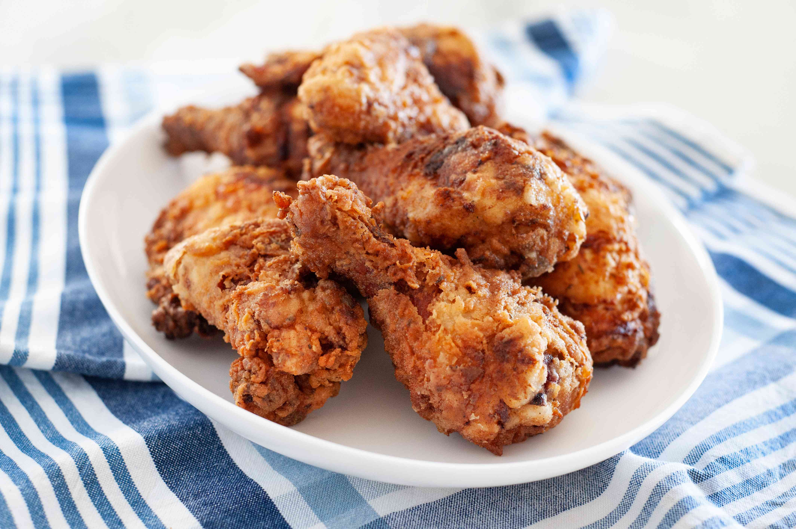

Buttermilk Fried Chicken

Description:
Kikkoman Tempura Batter Mix creates a crispy coating on this detectable fried chicken
- 1 (3 pound) frying chicken, cut up
- 2 cups buttermilk
- 1 teaspoon garlic powder
- 1 teaspoon onion powder
- Vegetable oil for deep-frying
- 2 cups Kikkoman Tempura Batter Mix
- Wash chicken and pat dry. In a large bowl, stir together buttermilk, garlic powder, onion powder, poultry seasoning and celery seeds. Place chicken in buttermilk mixture and refrigerate at least 8 hours or overnight.
- In a large frying pan or wok, heat oil to 325 degrees F. Drain chicken in a colander to remove excess buttermilk. Place tempura batter mix in a large paper bag; add chicken. Close top and gently shake bag to coat chicken with tempura batter mix. Remove chicken and fry, turning pieces over after 3 minutes. Continue to fry, turning occasionally, until browned on all sides.